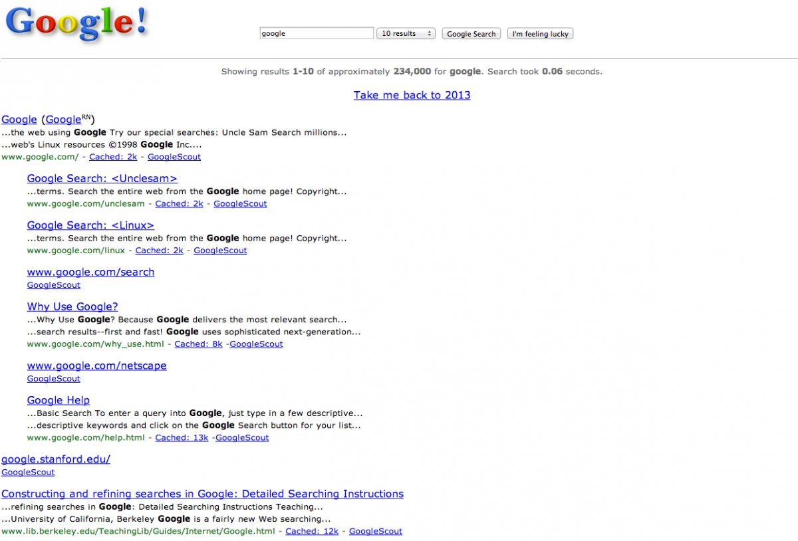
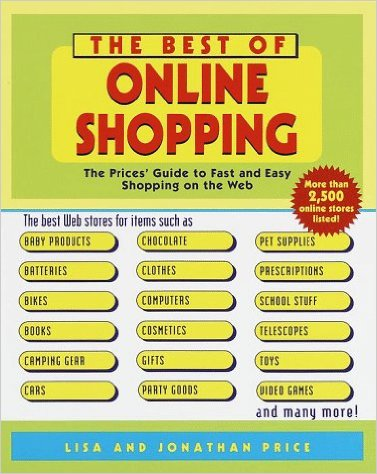

class: center, middle # The Web World from 1996-2000 <br> <br> By Suha Park, Sydney Toth, Jordan Fowler --- # 1996 <br> <p>In January 1996, there were only 100,000 websites. <br><br> In 1994, “Jerry’s Guide to the World Wide Web” had been renamed to “Yahoo!”. The Yahoo.com domain was created in January 1995. In 1996, Yahoo was well on its way to becoming one of the major Web portals. </p> --- # 1997 Part 1 <span style="float: right">popular domains appear online</span> <img src="godaddy.jpg" height: "300px", width="220px"> <span style="float: right">increase in domains = need for GoDaddy</span> <img src="com.jpg" height: "300px", width="220px"> <span style="float: right">all 3 letter domains are taken</span> --- # 1997 Part 2 <iframe width="200px" height="150" src="https://www.youtube.com/embed/-5x5OXfe9KY" frameborder="0" allowfullscreen></iframe> <span style="float: right"><em>Dancing (CGI) Baby/"Baby Cha-Cha</em>: First Internet Meme</span> <iframe width="300px" height="190" src="https://www.youtube.com/embed/A81IwlDeV6c" frameborder="0" allowfullscreen></iframe> <span style="float: right"><em>The Kids' Guide to the Internet</em> 4:10-4:30</span> --- # 1998 Part 1 <br> <p>Google's original data storage center, circa 1998.</p> --- # 1998 Part 2 <img src="google_logo.jpg" height: "400px", width="420px"> <br> <p>Here's what Google looked like the first day it launched.</p> --- # 1998 Part 3  <br> <p>And here's what a Google search page looked like.</p> --- # 1998 Part 4 <br> <p>Here’s how Hotmail web interface looked like before Microsoft decided to turn call it the Windows Live Hotmail</p> --- # 1999 Part 1  <br> <p>- Retail consultants predict a 1000% increase in online spending by 2005</p> <p>- Jonathan and Lisa Price publish a book guide to online shopping</p> <span style="float: right">- "What really sets the boundaries and drives things are the users. <strong>Technology is not what's driving the market anymore. It's what people want</strong> - and they want convenience." (Linus Torvalds, Linux founder, at the Comdex '99 exhibition)</span> --- # The Y2K bug <p><strong>predicted effects on:</strong></p> <p> - bank calculations</p> <p> - power plant safety checks</p> <p> - airline flight schedules</p> <p><strong>varying response/degrees of fear by different governments worldwide</strong></p> <p> - some poured millions into preparations"</p> <p> - others didn't do anything at all...neither experienced any significant adverse effects</p> --- # 2000 <p> - "The context and the state of content is going to be so different to anything we can envisage at the moment, where <strong>the interplay between the user and the provider will be so in simpatico</strong> it's going to crush our ideas of what mediums are all about." (David Bowie)</p> <p> - <strong>BowieNet:</strong> chatrooms, email service, archives</p> --- # Works Cited http://www.telegraph.co.uk/technology/6125914/How-20-popular-websites-looked-when-they-launched.html <br><br> http://www.slate.com/articles/technology/technology/2009/02/jurassic_web.html<br><br> http://slamxhype.com/wp-content/uploads/2014/06/emoji.jpg <br><br> http://royal.pingdom.com/2008/09/16/the-web-in-1996-1997/<br><br> https://www.youtube.com/watch?time_continue=118&v=A81IwlDeV6c<br><br> https://www.google.com/about/company/history/<br><br> http://news.bbc.co.uk/2/hi/business/574132.stm <br><br> http://www.businessinsider.com/heres-what-google-looked-like-the-first-day-it-launched-in-1998-2013-9<br><br> http://fusion.net/story/153981/heres-what-google-looked-like-in-1998/<br><br> --- # Works Cited (cont.) http://www.amazon.com/The-Best-Online-Shopping-Prices/dp/0345436814<br><br> http://www.reviewzat.com/en/articles-en/2382/8-people-who-changed-the-world-through-technology<br><br> http://www.computerhope.com/history/1997.htm<br><br> http://www.dailymail.co.uk/sciencetech/article-3394622/We-cusp-exhilarating-Watch-David-Bowie-accurate-prediction-internet-s-future-2000.html <br><br> http://www.cloudpro.co.uk/marketing/social-media/5726/bowienet-proves-david-bowie-was-at-the-cutting-edge-of-the-internet<br><br> http://www.hongkiat.com/blog/websites-we-visit-how-they-look-like-10-years-ago/<br><br> http://justsomething.co/15-famous-websites-and-what-they-looked-like-in-1998/ --- #Works Cited (cont.) https://www.google.com/search?q=david+bowie&espv=2&biw=1135&bih=648&source=lnms&tbm=isch&sa=X&ved=0ahUKEwju9oSPr4LLAhUYwWMKHXt7DLUQ_AUIBygC#tbm=isch&q=bowienet&imgrc=BuWtO2clmAZV_M%3A<br><br> http://www.huffingtonpost.com/2013/02/06/best-websites-90s_n_2542393.html#gallery/276624/8<br><br> http://www.ebay.com/itm/Y2K-Hallmark-Crash-Bug-Plush-6-Stuffed-Animal-Makes-Crash-Sound-When-Dropped-/171639621454 <br><br> http://blueprintds.com/2012/07/02/top-web-design-memes-on-the-internet/<br><br> http://www.noip.com/blog/2014/01/09/8-facts-about-domain-names/<br><br> https://www.hover.com/blog/ten-little-known-facts-about-domain-names/<br><br>